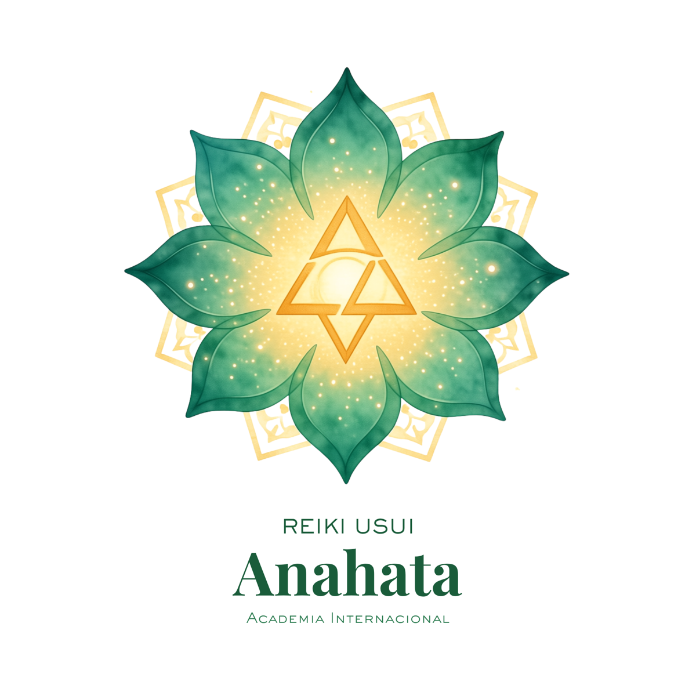

Conexión espiritual
Desarrolla una relación más profunda con la energía universal.

Reiki Usui Anahata Academia Internacional WhatsAppNuevo grupo presencial · 4 cupos disponibles
Certificación presencial en Reiki Usui para aprender a canalizar energía universal, sanar desde el autoconocimiento y practicar mientras integras cada enseñanza.
Quedan 4 cupos disponibles para el grupo presencial del 22 de julio.
Descubre, aprende y transforma
En Reiki Usui Anahata recibirás teoría, práctica, acompañamiento continuo y herramientas para integrar la energía universal en tu crecimiento personal y espiritual.
Desarrolla una relación más profunda con la energía universal.
Aprende técnicas para trabajar contigo y acompañar a otros.
Integra radiestesia, manejo de péndulo y práctica guiada.
Beneficios del programa
Algo especial de nuestra Academia Anahata es que no esperas a graduarte para empezar a integrar lo aprendido: tendrás la posibilidad de practicar mientras aprendes, con guía, acompañamiento y espacios diseñados para ganar confianza en tu canal energético.
Niveles de formación
Conceptos básicos del Reiki, su historia y la canalización de la energía universal.
Profundización espiritual, filosofía del Reiki y sintonización para acompañar a otros.
Técnicas avanzadas, símbolos sagrados, energía a distancia y trabajo emocional.
Acompañamiento integral
Clases teóricas, prácticas presenciales y un proceso pensado para integrar lo aprendido.
Después de graduarte seguirás siendo parte de una comunidad con eventos, talleres y recursos.
Una comprensión completa del Reiki como técnica de sanación y camino de crecimiento interior.
Inversión de la certificación
Valor regular $1.980.000
Precio especial $1.680.000 Disponible hasta el 5 de julio.
Quedan 4 cupos disponibles para el grupo presencial.
Por qué elegir Reiki Anahata
Instructores certificados y con experiencia para guiarte con claridad y calidad.
Aprendizaje estructurado para comprender cómo se canaliza y aplica la energía Reiki.
Un camino de sanación interior que también te prepara para acompañar a otros.
Inscripciones abiertas
Escríbenos por WhatsApp para confirmar disponibilidad, resolver tus preguntas y separar tu cupo en el grupo que inicia el 22 de julio.